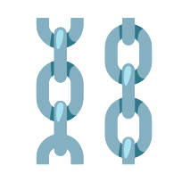
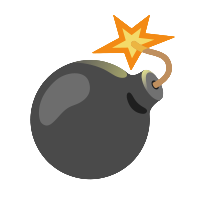
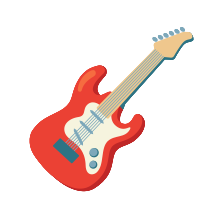
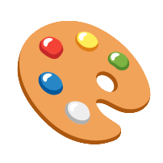
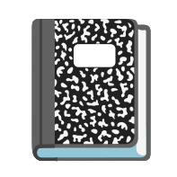
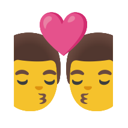
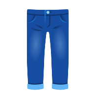
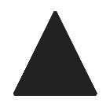
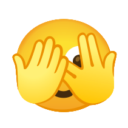

PUNK

PUNK IN THE 80S

90S EMOCORE
GLAM
GERARD
AUTHENTICITY

CURATORIAL
DESIRE

JOURNALISM

STAGE GAY

EMO STYLE

EMO TRINITY

SHAME
MMRS
CITATIONS
~BETA RELEASE v1.0~
GIRL GENES IS A HYPERLINKED HISTORY OF THIRD-WAVE EMO, AS TOLD BY TEEN GIRLS AND QUEERS ON THE INTERNET 🖤🖤🖤🖤🖤🖤🖤
WHY DID I SPEND NINE MONTHS MAKING THIS?
For the past twenty five years, white male music journalists have misrepresented emo as a predominantly white-masculine subculture, largely because of their failures to engage thoughtfully with social media fandom and feminized fan behaviors like fashion, fanfiction, and shipping. They repeatedly direct all of their attention toward the bands themselves, which obscures the fact that the majority of the fanbase is dominated by young women, queer people, and people of color whose tastes have steered the entire subculture since the early 2000s. My project here is an attempt to undo some of this damage.
WHY IS THIS A WEBSITE? (SPOILER……IT’S HYPERLINKS)
As you will learn here, emo is inextricable from the internet. In her book Emo: How Fans Defined a Subculture, Judith May Fathallah argues that third-wave emo is, first and foremost, an internet subculture. This is to say that the glue binding the biggest third-wave emo bands together into any semblance of a “genre” is not a consistent sonic identity, geographic origin, shared record label, or other offstage connection.
The organizing force of third-wave emo is teen girls and queers on the internet.
This book is my bible. Emo was the first major academic effort to look at this subculture through an online and feminine perspective, but the book stops short of making any declarative statements about emo as a queer and feminine subculture. (This isn't necesarily a criticism. It's unfair to ask any one book to capture everything about emo.) In the last line of the book, Fathallah asks: "If fandom—a web of narractivity and intradiscursivity that we have observed defines the shape and structure of the genre—is, if not female dominated, then at least populated by a high proportion of women and girls, why is it that the voices of girls' experiences, with music, in fandom, are still so uncomfortably quiet?"
Well. I am here to respond to this question. And it's going to involve a lot of hyperlinks.
In short, this project is a website because I am telling a story about the internet. It didn’t make sense to me to try to wrangle all of this into another, less-suitable shape when the online format makes it easy to link you directly to different corners of the emo internet as they come up. The website format is also a lot less linear than the traditional written essay, which means you can jump around to different places, read things multiple times or not at all, and make your own connections between things. As an online subculture, emo thrives in all of these different modes. Over the past two and a half decades, emo has sustained itself through the constant recycling, reframing, and repurposing of old content. It’s all screenshots of screenshots of screenshots. Inside jokes dragged across time through social media platforms that don’t even exist anymore. Emo is a complex network of online discourses and niche subcultural references, and this hyper-textual format lets me really show you how it all links together.
Lastly, I’ve chosen this format because it puts my work in conversation with the long lineage of curatorial fan practices pioneered by young women for centuries, which you can learn all about here in the section titled CURATORIAL. Think of this as a DIY emo fansite of sorts. I hand-coded the entire thing from scratch, thinking about how young women have made their own sites/blogs/MySpaces/Tumblrs etc. since the dawn of the social internet to share the things that they love. It’s about 80% HTML/CSS, 20% very easy Javascript, and 100% pure passion project.
I don’t consider my work here by any means finished. Girl Genes is more of an ecosystem that I plan to add to and revise as I continue to think about these things (which I do constantly). Yet another benefit of the website format.
A BREIF NOTE ON IMAGE SOURCES: Once image files enter the online fan ecosystem, it quickly becomes difficult to trace them back to their original source. As such, the majority of the images you will see here are ones that I’ve pulled from tumblr, stan Twitter accounts, Reddit posts, decades-old blogs, my own camera roll, and other spaces where crediting original sources is often not people’s primary concern. I’ve done my best to provide image references when appropriate, but this is one area where “academic master’s thesis” really rubs up against “I’m making a fan website that’s mostly built out of images that I’ve been collecting for purely personal reasons for like fifteen years.” Such is the nature of fan projects. I hope you understand.
HOW DO I GET AROUND HERE?
You are currently on the site homepage. The sidebar here contains links to every essay, timeline, info sheet, and weird art experience on this site. You can return here at any point by clicking on the [RETURN TO HOME] icon pasted in the top left corner of every webpage.
There isn’t necessarily a correct order to anything here. You can (and should) go anywhere you feel called. But, that said, I do recommend starting with PUNK and following that up with PUNK IN THE 80S. These are really the only essays that follow a linear trajectory (i.e. 1970s, 80s, then 90s), and they include important info on some of the cultural conditions that led up to emo in the 2000s. I feel pretty strongly that learning about emo’s ancestry first will enrich the rest of your experience here, but ultimately this is a website where everything is equally accessible from the get-go, and I’m not watching you navigate. Maybe you’re a real punk who has already decided to NOT start with the punk essay just because I explicitly told you to. And I respect that.
Finally, there are lots of little secrets hidden around here if you’re willing to look for them. Text that looks weird is probably hiding something. You should interact with it.